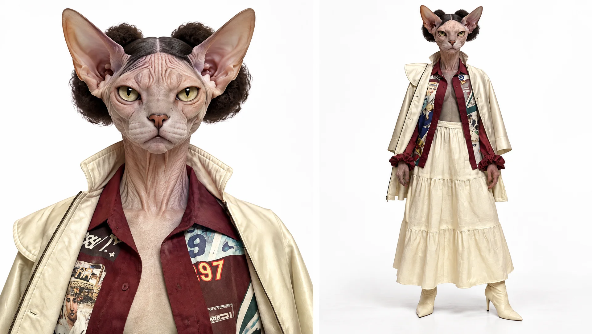

Выбираем сервис под задачу.
Получаем результат и проверяем его.
От сообщения семье до ответа по документам.
От CSV до таблицы, слайдов и картинки.
Озвучка, расшифровка, персонаж и музыка.
Что нужно получить: ответ, файл, картинку или звук?
Что уже есть: исходный текст, документ, CSV или аудио?
Как убедиться: даты, формулы, источники, предметы?
Новый чат в каждом из трёх сервисов
Нужен только текст запроса. Файлы не прикрепляем.
1. Откройте ChatGPT, Алису AI и GigaChat по кнопкам сверху.
2. В каждом сервисе создайте новый чат. Скопируйте один и тот же промпт справа в поле сообщения и отправьте.
3. Сравните ответы: тон, длину и точность. Выберите текст, который удобно отправить семье.
Проверка: До 60 слов; 30 октября, 20:00; сбор покупок до 28 октября; три покупки; цель на ноябрь.
Напиши дружелюбное сообщение семье до 60 слов: 30 октября в 20:00 онлайн обсуждаем расходы за месяц. До 28 октября каждый присылает три крупные покупки. На встрече выбираем общую цель на ноябрь. Не добавляй условия от себя.
Тот же чат со слайда 4
Выберите один из трёх сервисов и оставьте открытым его ответ.
1. Останьтесь в диалоге с первым сообщением семье.
2. Отправьте промпт справа следующим сообщением. Исходный текст заново не прикрепляйте.
3. Сравните первую и вторую версии. Если открыли новый чат — сначала вставьте исходный ответ, затем просьбу о правке.
Проверка: Ровно три предложения; все даты, время и действия сохранены.
Перепиши своё предыдущее сообщение семье ровно в три предложения, дружелюбно и без канцелярита. Сохрани дату 30 октября, время 20:00, срок 28 октября, три крупные покупки от каждого и выбор общей цели на ноябрь. Не добавляй новых условий. Выведи только готовое сообщение.
Новый поиск в Perplexity
Файлы не нужны. Используем обычный Search; платные режимы не включаем.
1. Откройте Perplexity и вставьте запрос в поле поиска.
2. Отправьте его в базовом режиме. Прочитайте ответ и найдите ссылки на Яндекс.
3. Откройте хотя бы один первоисточник. Сверьте срок, участников акции и ограничения.
Проверка: Есть прямые официальные ссылки; бесплатный чат отделён от бизнес-пробного периода.
Сравни обычный чат Алисы AI и Алису AI для бизнеса по официальным страницам Яндекса на сегодня. Сделай таблицу: задачи, что доступно бесплатно постоянно, что только на пробный период, условия после него. Для каждой строки дай прямую ссылку. Не смешивай бесплатный чат с пробной бизнес-подпиской. Если условие не найдено, так и напиши.
Новый блокнот · PDF + две статьи + YouTube
Тема: как учиться и работать с ИИ. Источники на английском; объяснения и форматы будем получать на русском.
1. Создайте блокнот: Create new / Создать. Назовите «Учимся с ИИ».
2. Откройте PDF Google по кнопке справа и сохраните файл: 16 страниц с примерами работы и запросов.
3. Добавить источник → Загрузить файлы → выберите сохранённый PDF.
4. Добавить источник → Сайты. Скопируйте три ссылки справа целиком, вставьте в поле URL и нажмите Добавить.
5. Дождитесь обработки: PDF, статья Google, страница ЮНЕСКО и ролик Google Workspace. Отметьте все четыре источника.
Проверка: Четыре обработанных источника слева. YouTube импортируется как текст субтитров; страницу ЮНЕСКО используем как статью, а не полный отчёт.
https://blog.google/innovation-and-ai/models-and-research/google-labs/notebooklm-student-features/ https://www.unesco.org/en/articles/guidance-generative-ai-education-and-research https://www.youtube.com/watch?v=AmKZCo5Dtn0
Google: практические примеры и способы учиться с ИИ. ЮНЕСКО: человеческий контроль и защита данных. Google Workspace: ролик о работе с источниками.
Тот же блокнот · чат в центре экрана
Оставьте отмеченными все четыре источника со слайда 7. Новый чат или другой блокнот не создаём.
1. Вставьте промпт справа в «Поле для запросов» в центре и отправьте.
2. Посмотрите таблицу: сервис соединяет PDF, статьи и расшифровку ролика в один ответ.
3. Нажмите номер цитаты возле одного вывода. Откроется фрагмент исходного материала.
4. Сверьте утверждение с фрагментом: источник действительно это говорит? Обратите внимание на дату документа.
Проверка: Пять задач, три риска и ссылки на источники. Цитата помогает проверить ответ, но не гарантирует его точность.
По всем выбранным источникам объясни по-русски, как учиться и работать с ИИ. Сделай таблицу из пяти практических задач: задача, действие в сервисе, ожидаемый результат, способ проверки. К каждой строке дай цитату из источника. Отдельно укажи три ограничения или риска. Разделяй рекомендации ЮНЕСКО и примеры Google. Если информации нет, так и напиши. Не придумывай функции, цены и гарантии.
Тот же блокнот · Студия → Аудиопересказ
Файлы заново не загружаем. Формат создаётся по выбранным источникам; запрос вставляем в настройку Студии, а не в чат.
1. Справа в Студии откройте «Аудиопересказ» и его настройки.
2. Выберите «Подробный анализ» — разговор двух ведущих; язык русский, длина «Маленькая».
3. В поле «На чем в этом выпуске должны сделать акцент ИИ-ведущие?» вставьте промпт справа.
4. Нажмите «Сгенерировать сейчас». Если доступна только кнопка «Сгенерировать позже», поставьте в очередь без смены тарифа.
5. После готовности откройте запись: послушайте начало и один практический пример. Сверьте их с документами.
Проверка: Ведущие объясняют на русском; факты соответствуют источникам. Для эфира подготовьте запись заранее: генерация может занять время.
Объясните новичкам по-русски, как учиться и работать с ИИ. Два ведущих обсуждают три практических сценария из материалов, затем ошибки и проверку результата. Различайте примеры Google и рекомендации ЮНЕСКО. Без рекламы, выдуманных фактов и обещаний гарантированной пользы.
Тот же блокнот · Студия → Видеопересказ
Это учебный обзор с озвучкой и визуальным объяснением. Исходный ролик YouTube остаётся одним из текстовых источников.
1. Откройте «Видеопересказ» в Студии и настройки.
2. Выберите «Краткий обзор» и русский язык. Не выбирайте платный формат, если он предложен.
3. В поле «О чем должно быть видео?» вставьте промпт справа.
4. Нажмите «Сгенерировать сейчас» или «Сгенерировать позже», если сервис предлагает очередь.
5. Откройте готовое видео и покажите схему, озвучку и один пример. Проверьте подписи, порядок шагов и факты.
Проверка: Обзор соответствует выбранным материалам; русский язык и понятные схемы. Начните генерацию до занятия, затем покажите готовый результат.
Короткий видеообзор на русском: как превратить PDF, статью и лекцию в понятный учебный материал. Покажи путь: источники → вопрос с цитатами → выбор формата → проверка результата. Используй примеры из источников и простые визуальные схемы. Заверши тремя ограничениями. Не добавляй новых функций или обещаний.
Тот же блокнот · Студия → Презентация
Одна библиотека даёт разные способы разобраться в теме: слайды, тест, карточки и ментальную карту.
1. Откройте «Презентация» в Студии и её настройки.
2. Выберите «Слайды докладчика», русский язык, длину «Маленькая».
3. В поле «Опишите, какую презентацию вы хотите создать» вставьте промпт справа. Запустите доступной кнопкой: сейчас или позже.
4. После готовности откройте слайды, проверьте смысл, подписи и цифры. Скачайте PDF через меню результата, если доступно.
5. Для самопроверки нажмите «Тест» или «Карточки» в Студии. Отдельный промпт не обязателен. Для обзора связей нажмите «Ментальная карта».
Проверка: Слайды по материалам, а не произвольный рассказ. Решите один вопрос теста и откройте объяснение; сравните с источником. При исчерпании лимита используйте уже готовый результат.
Сделай короткую презентацию на русском «Как учиться и работать с ИИ» для взрослых новичков. Содержание: карта возможностей, три практических сценария из источников, схема хорошего запроса, ограничения и чек-лист проверки. Крупные тезисы, простые схемы и сравнительные блоки. Разделяй примеры Google и рекомендации ЮНЕСКО; без новых фактов, цен и рекламных обещаний.
Новый чат ChatGPT · прикрепляем CSV
Скачайте «Учебный CSV» по кнопке на этом слайде. Это синтетические отзывы.
1. Создайте новый чат. Нажмите + / скрепку → загрузите скачанный CSV.
2. Дождитесь появления файла в сообщении. Вставьте промпт справа и отправьте вместе с файлом.
3. Проверьте четыре показателя и примеры комментариев. Сохраните ответ для своего отчёта.
Проверка: 20 ответов; 79/20 = 3,95; 14/20 = 70%; 15/20 = 75%. Улучшения опираются на комментарии.
Проанализируй прикреплённый CSV с отзывами. Посчитай число ответов, среднюю оценку, долю оценок 4–5 и долю «да» в колонке «рекомендую». Для каждого показателя покажи расчёт и результат в таблице. Затем предложи три улучшения: для каждого укажи комментарий-основание. Не выдумывай отзывы и числа. Если файл не читается или колонка отсутствует, сначала сообщи об этом.
Новый чат · Алиса AI для бизнеса
Войдите в подключённую организацию. Все исходные данные уже есть в промпте; файл загружать не нужно.
1. Откройте именно рабочее пространство Алисы AI для бизнеса. Создайте новый чат.
2. Вставьте промпт справа и отправьте. Дождитесь настоящего вложения .xlsx, а не только текста с обещанием.
3. Скачайте XLSX и откройте в Excel или другом редакторе таблиц. Нажмите ячейку итога и проверьте формулу.
4. Сохраните файл и оставьте этот чат открытым: следующий слайд продолжает его.
Проверка: А = 31 000 ₽; Б = 32 000 ₽; Б−А = 1 000 ₽. А дешевле, Б быстрее. В ячейках формулы, а не вписанные итоги.
Нужно купить 10 стульев. Поставщик А: 3000 ₽ за штуку, доставка 1000 ₽, срок 7 дней. Поставщик Б: 3200 ₽ за штуку, доставка 0 ₽, срок 3 дня. Создай и приложи XLSX. Столбцы: поставщик, количество, цена за штуку, доставка, полная стоимость, срок. Итог считай формулой «количество × цена + доставка». Отдельно вычисли формулой разницу Б−А. Дай вывод: что выбрать, если важнее цена, и что — если важнее скорость. Не добавляй скидки и другие условия.
Тот же чат Алисы со слайда 13
Продолжаем диалог, где получили XLSX. В этот чат повторно загружать таблицу не нужно.
1. Вернитесь в тот же чат Алисы для бизнеса. Отправьте промпт справа следующим сообщением.
2. Если начали новый чат — прикрепите скачанный XLSX со слайда 13 и отправьте тот же запрос.
3. Дождитесь вложения .pptx. Скачайте и откройте в PowerPoint или другом просмотрщике.
4. Сверьте три слайда с таблицей. Следующий пример Gamma начинаем отдельно.
Проверка: Есть файл PPTX; ровно три слайда; 31 000 / 32 000 / 1 000 ₽ и сроки 7 / 3 дня не изменились.
На основе предыдущего сравнения стульев создай и приложи PPTX ровно на 3 слайда: 1) два поставщика — количество, цена, доставка и сроки; 2) полная стоимость А 31 000 ₽ и Б 32 000 ₽, разница Б−А 1 000 ₽; 3) вывод: А при приоритете цены, Б при приоритете скорости. Используй сравнительную таблицу, крупные итоги и короткий вывод. Сохрани все исходные числа. Не добавляй скидок, условий и выдуманных преимуществ.
Новая презентация Gamma · 5 слайдов
Файл не нужен: в промпте есть учебные показатели и сценарий улучшения вебинара.
1. Откройте Gamma → Create new AI / Создать → Generate / Сгенерировать → Presentation.
2. Выберите 5 карточек, русский язык и 16:9, если выбор формата доступен. Вставьте промпт справа.
3. В редакторе подсказок выберите «Краткий» текст и тему. Проверьте счётчик: 5 карточек; лишние уберите кнопкой «−» внизу. Нажмите «Сгенерировать».
4. Просмотрите все пять слайдов: проверьте цифры, визуальные формы и отсутствие выдуманных фактов. На следующем слайде улучшаем одну карточку.
Проверка: Пять слайдов; KPI, шкалы, схема и план; 20 / 3,95 / 70% / 75%. Гипотеза не выдана за вывод из отзывов.
Создай презентацию «Как сделать следующий вебинар полезнее» для команды онлайн-школы: 5 слайдов на русском. Учебные данные: 20 отзывов, средняя оценка 3,95 из 5, оценки 4–5 у 70%, рекомендуют 75%. Слайд 1: яркая обложка и вопрос «Что изменим к следующему эфиру?». 2: четыре крупные KPI-карточки. 3: две подписанные горизонтальные шкалы 70% и 75%, вывод — это разные показатели. 4: визуальная схема «до / после»: длинное объяснение → демонстрация → самостоятельная проба; обозначь это гипотезой улучшения, а не результатом опроса. 5: план из трёх шагов — выбрать одно изменение, провести эфир, собрать новые отзывы. Светлый фон, тёмный текст, оранжевый акцент, много воздуха, максимум 35 слов на слайд. Числа не меняй; новых процентов, цитат и причин из отзывов не выдумывай.
Та же презентация Gamma · правка слайда 3
Откройте созданную деку. Сейчас меняем только карточку со шкалами.
1. Выберите третий слайд «70% и 75%». Откройте значок ✨ / Edit with AI этой карточки.
2. Вставьте промпт справа в поле правки и примените. Весь документ заново не генерируйте.
3. Если шкалы не появились — вставьте их вручную через + / блоки и задайте подписи и значения.
4. Проверьте числа → Present / Показ → Export / Экспорт → PDF → все карточки. Сохраните результат.
Проверка: Изменилась только выбранная карточка; обе подписи и проценты сохранены. PDF ниже — новый пятислайдовый результат.
Измени только этот слайд. Заголовок: «Довольны и рекомендуют — разные показатели». Оставь две горизонтальные шкалы: «Оценили на 4–5 — 70%» и «Готовы рекомендовать — 75%», обе на шкале 0–100%. Под ними одна фраза: «Уточняем, что улучшить, по текстам отзывов». Убери длинные абзацы, сделай подписи крупнее и используй оранжевый акцент. Не добавляй причин или новых фактов. Остальные слайды не меняй.
Новый чат Gemini · создание изображения
Файл не нужен. Выберите создание изображений, если оно выделено отдельным режимом.
1. Откройте Gemini и создайте новый чат. Вставьте промпт справа и отправьте.
2. Дождитесь именно изображения. Если получен только текст — попросите создать картинку.
3. Проверьте предметы и сохраните файл. Оставьте диалог открытым для правки на слайде 18.
Проверка: Три предмета на месте; горизонтальная композиция; нет читаемых надписей и логотипов.
Создай горизонтальную иллюстрацию 16:9 для учебной презентации. На светлом деревянном столе настольный календарь слева, открытый блокнот по центру и чашка справа. Тёплый дневной свет, уютная спокойная атмосфера, аккуратная композиция, свободное место над предметами. Без людей, читаемых надписей и логотипов. Все три предмета должны быть отчётливо видны.
Тот же чат Gemini со слайда 17
Правка относится к созданному изображению. В новом чате сначала прикрепите его файл.
1. В том же диалоге отправьте промпт справа следующим сообщением.
2. Сравните дневную и вечернюю версии: положение предметов, фон и освещение.
3. Скачайте новое изображение. Справа — сохранённый результат предыдущего пробного запуска.
Проверка: Изменилось освещение; предметы, их расположение и формат сохранены.
Отредактируй последнее созданное изображение. Сохрани горизонтальный формат, светлый стол, календарь слева, блокнот по центру, чашку справа и их размеры. Замени только дневное освещение на вечернее: тёплый свет настольной лампы, мягкие тени, спокойная уютная атмосфера. Не добавляй предметы, текст или логотипы.
Результат предыдущего теста
Новая генерация изображения · Шедеврум
Откройте базовое создание картинки. Файлы не нужны; платную Студию и видео не выбираем.
1. Выберите создание изображения и найдите поле описания.
2. Вставьте промпт справа. Проверьте доступный бесплатный режим и нажмите Создать.
3. Дождитесь результата. Проверьте каждый из трёх предметов; при пропуске уточните описание и повторите при доступной квоте.
Проверка: В старом тесте календарь был пропущен. Проверяйте содержание, даже если картинка красивая.
Горизонтальная уютная иллюстрация: светлый деревянный стол, настольный календарь слева, открытый блокнот по центру и чашка справа. Все три предмета крупные и отчётливо видны. Тёплый дневной свет, мягкие тени, спокойные цвета. Без людей, надписей и логотипов.
ElevenLabs · Text to Speech
В поле Text вставляем сам текст для озвучки. Инструкцию «озвучь» добавлять не нужно.
1. Откройте Text to Speech. Выберите готовый голос Roger или доступный голос в своём бесплатном режиме.
2. Вставьте текст справа в поле Text. Проверьте лимит кредитов и нажмите Generate.
3. Прослушайте даты и время. Скачайте MP3 — его загрузим в TurboScribe на слайде 21.
Проверка: 30 октября, двадцать часов, срок 28 октября, три покупки. Внизу — аудио предыдущего теста.
30 октября в двадцать часов встречаемся онлайн. До двадцать восьмого октября каждый присылает три крупные покупки. Обсудим расходы и выберем общую цель на ноябрь.
TurboScribe · загружаем MP3
Сохраните своё аудио со слайда 20 или скачайте «Учебная запись · MP3» ниже.
1. Откройте TurboScribe → Transcribe Files / Расшифровать. Загрузите MP3 с компьютера.
2. Выберите русский язык и доступный бесплатный режим. Нажмите Transcribe; текстовый промпт не нужен.
3. Откройте расшифровку. Сравните её с текстом слайда 20: даты, время, действия.
4. Export / Экспорт → TXT. Скачайте файл и откройте. Ниже есть резерв готовой расшифровки.
Проверка: Расшифровка соответствует аудио; TXT действительно скачан. SRT в этом кейсе не требуется.
Расшифровка соответствует аудио; TXT действительно скачан. SRT в этом кейсе не требуется.
Higgsfield · готовый персонаж Cat
Текстовый промпт и исходный файл не нужны. Используем только явно бесплатную генерацию.
1. Откройте AI Influencer Studio → Create Influencer.
2. Выберите Cat. Найдите Use free gens и убедитесь, что кнопка называется Generate Free.
3. Если бесплатные попытки доступны — запустите и дождитесь результата. Скачайте изображение персонажа.
4. Если Free отсутствует или квота закончилась — разберите готовый результат справа. Платную генерацию не запускайте.
Проверка: Получено изображение персонажа. Это не видеоролик; Motion в подтверждённый пример не входит.

Результат предыдущего теста
Suno · новая инструментальная композиция
Бонус по времени. Файл не нужен; используем доступные бесплатные кредиты.
1. Откройте Create / Создать. Включите Instrumental / Без вокала.
2. В поле описания музыки вставьте промпт справа. Поле Lyrics оставьте пустым.
3. Нажмите Create. Прослушайте результат и выберите подходящий вариант.
Проверка: Нет голоса и слов; музыка подходит к началу встречи. Условия использования проверяем в своём тарифе.
Спокойная инструментальная музыка для начала учебного вебинара. Акустическая гитара, мягкое фортепиано, лёгкий ритм, тёплое доброжелательное настроение. Без вокала и слов, без резких переходов. Музыка не должна отвлекать от речи ведущего.
| Тип | Моя задача | Кандидаты | Проверка |
|---|---|---|---|
| Тексты | Сообщение или объяснение | ChatGPT / Алиса / GigaChat | Даты и условия |
| Поиск | Ответ со ссылкой | Perplexity / Notebook | Источник и цитата |
| Таблицы | Расчёт или XLSX | ChatGPT / Алиса для бизнеса | Числа и формулы |
| Визуал | Слайды или иллюстрация | Gamma / Gemini / Шедеврум | Факты и детали |
| Аудио | Озвучка или расшифровка | ElevenLabs / TurboScribe | Произношение и текст |
Я понимаю, какой сервис выбрать под свою задачу.
Я могу дать короткий запрос и получить первый результат.
Я сверяю числа, источники и детали с исходными данными.